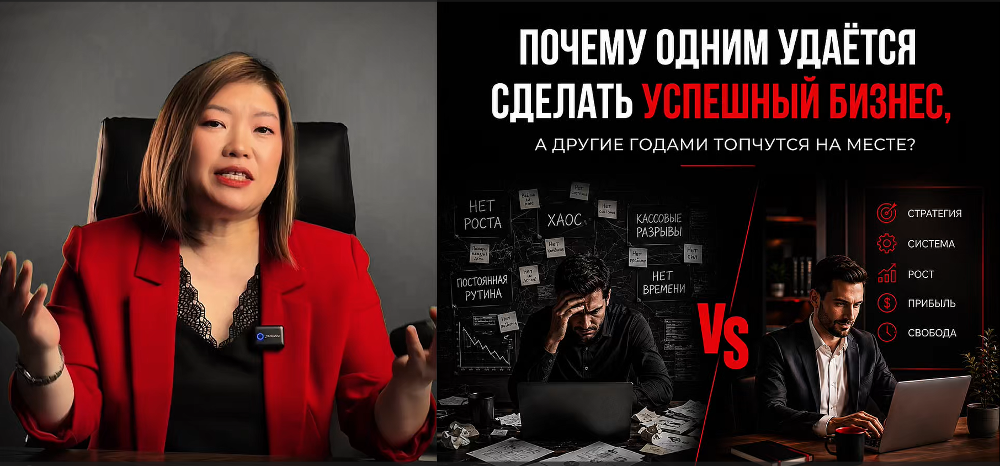
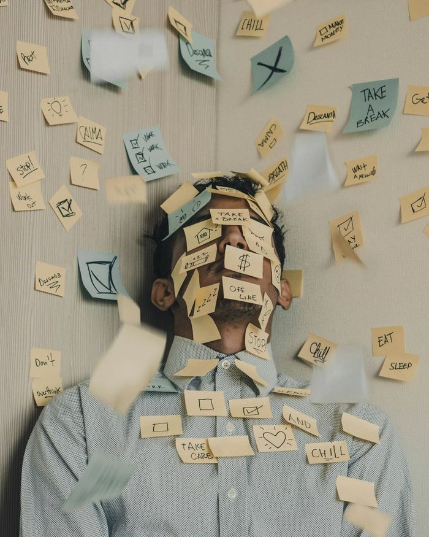
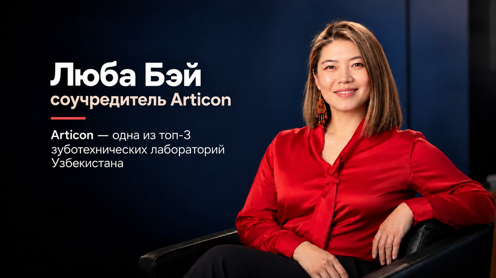

Как создать устойчивый семейный бизнес в Узбекистане в 2026 году
Семья Любы продала машину и заняла деньги на оборудование за €40 000. На тренинге им сказали: «Денег мы не даём». Почему именно это их спасло — в видеоразборе.
Работаете больше всех, а бизнес топчется на месте?
За 8 минут Люба Бэй покажет, почему так происходит и как создать устойчивый семейный бизнес в Узбекистане в 2026 году — на истории своей семьи, которая чуть не потеряла всё из-за оборудования за €40 000.
Мы продали машину. Заняли деньги. И никогда не были так близки к провалу.
В своём видео Люба Бэй рассказывает, как оборудование за €40 000 чуть не стоило её семье бизнеса, как они потом построили устойчивый бизнес — и что сделать вам, чтобы создать свой в Узбекистане в 2026 году.

Демо-плеер: видео ещё не загружено. Для проверки ускорьте: добавьте к адресу ?demo=60.
Осталось досмотреть: 03:00
- С чего начать и какие шаги сделать, чтобы создать устойчивый семейный бизнес
- 7 шагов — от идеи до плана на 90 дней: на каждом вопрос, действие и результат
- PDF пришлёт бот FBT в Telegram, бесплатно
5 минут. Бесплатно. Ответьте на 10 простых вопросов — и наш куратор Александр поможет разобраться, что сейчас происходит с вашим бизнесом: где теряются деньги, клиенты и ваше время, и с чего начать именно вам.
- Всего 5 минут — 10 вопросов, ответы «да», «частично» или «нет». Ничего готовить и искать не нужно.
- Живой куратор, а не робот — Александр посмотрит ваши ответы и запишет голосовой разбор: что мешает бизнесу и какой шаг сделать первым.
- Бесплатно и ни к чему не обязывает — ничего покупать не нужно. Просто станет понятно, что делать дальше.
Бот не прислал карту? Открыть бот ещё раз
Узнаёте себя?

← листайте →
Это нормальный этап, а не личная неудача. Через него проходят все предприниматели.
Но если ничего не менять, через год всё останется так же — только усталости станет больше.

Оборудование за €40 000,которое мы боялись включить
- «Мы отдали всё, что у нас было»
Продали машину, заняли у родителей и друзей и купили немецкое оборудование для зуботехнической лаборатории.
- «Мы боялись даже нажать не ту кнопку»
Одна ошибка — и мастера пришлось бы вызывать из Германии примерно за €5 000. Оборудование стояло, долги росли.
- «Мы ехали за деньгами, а получили систему»
На тренинге швейцарских преподавателей в Казахстане надеялись найти инвестиции. В первый же день услышали: «Денег мы не даём».
- «Проблемы — это возможности»
Одна фраза с тренинга перевернула мышление. Сегодня их лаборатория — в пятёрке лучших в Узбекистане.
Что говорят те, кто уже прошёл FBT
Живые видео от выпускников FBT. Листайте вбок и нажмите, чтобы посмотреть.
Три шага.Сейчас вы на первом.
Посмотреть видеоразбор
8 минут о том, как создать устойчивый семейный бизнес в Узбекистане: с чего начать и что делать дальше. В конце — карта действий в подарок.
Вернуться к видеоразбору Забрать карту Открыть бот с картойПройти диагностику
10 вопросов, 5 минут. Покажет, что мешает вашему бизнесу стать устойчивым и с какого шага начать. Результат разберёт куратор.
Получить разбор от куратора
Куратор Александр посмотрит ваши ответы и запишет голосовой разбор в Telegram: что мешает бизнесу и какой шаг сделать первым.
← листайте →
Пройдите квест: соберите 9 артефактов — получите книгу в подарок
Каждый ваш шаг на сайте и в Telegram-боте приносит артефакт. Соберите все 9 — квест пройден, и Люба подарит вам печатную книгу.
7 шагов от идеи до плана на 90 дней. Карта откроется в конце видео. Осталось: 03:00
- С чего начать и какие шаги сделать, чтобы создать устойчивый семейный бизнес
- 7 шагов — от идеи до плана на 90 дней: на каждом вопрос, действие и результат
- PDF пришлёт бот FBT в Telegram, бесплатно
- 5 минут — 10 простых вопросов, ответы «да», «частично» или «нет».
- Куратор Александр посмотрит ответы и запишет голосовой разбор в Telegram: что мешает бизнесу и какой шаг сделать первым.
- Бесплатно и ни к чему не обязывает.
Бот не прислал карту? Открыть бот ещё раз